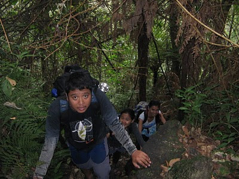

Mt. Matutum
Rising like an island of green from the surrounding plains, Mt. Matutum is a solitary stratovolcano in southern Mindanao. Its slopes hold an uncommon concentration of life and story: crater lakes and mossy forests, fruiting trees that feed birds and people, and talus fields that remember older eruptions. From a distance the cone reads as a single shape; up close it is a living, layered landscape.
Geology and Water

Matutum’s geology is the slow grammar that shaped local life. Rainfall funnels into the crater and into clear streams that feed rice terraces and lowland rivers. Volcanic soils here are rich and deep; they make the surrounding plains unusually fertile, and for generations people have read seasons by the mountain’s weather.
Culture and Conservation
For the indigenous communities nearby, Matutum is more than a landmark. It is a repository of place-names and rites, a source of wood and medicine, and — increasingly — a focus of conservation. Local custodians and small conservation groups work together to limit destructive logging and to protect the watershed that downstream towns depend on.
On the Trail
Climbing Matutum is quietly demanding: routes move from cultivated lower slopes into steep, brushy ridges, and finally into a cooler, moss-draped upper forest. Hikers are rewarded with expansive views—on clear days, the planes of South Cotabato unfold below, and the neighboring peaks of Mindanao appear like distant islands.

Visitors should travel lightly and respectfully: pack out what you bring, hire local guides, and accept that the mountain’s pace is slower than the road’s. When communities and visitors work together, Matutum remains intact for the next generation.
Visitors should travel lightly and respectfully: pack out what you bring, hire local guides, and accept that the mountain’s pace is slower than the road’s. When communities and visitors work together, Matutum remains intact for the next generation.
← Back to Dashboard